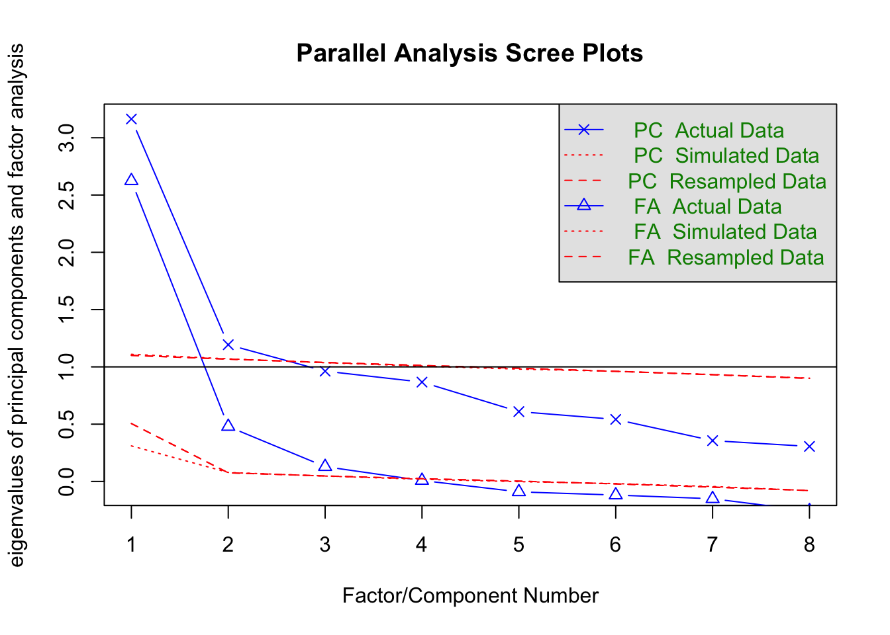
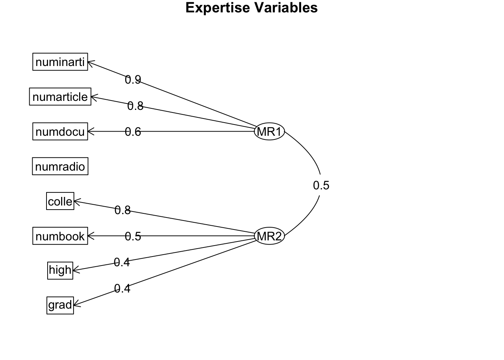
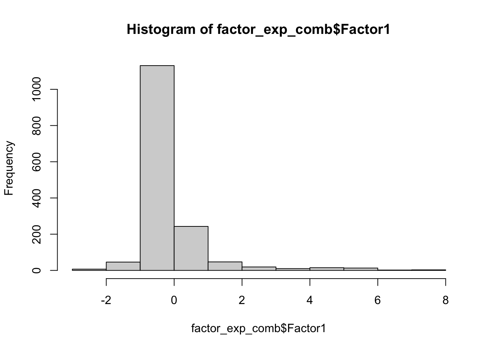
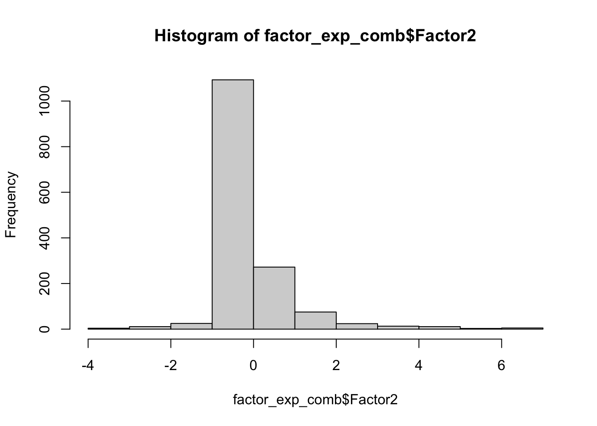

#Import library ----
library(tidyverse)
library(readr)
library(purrr)
library(jmv)
library(psych)
library(DescTools)
library(stats)
library(factoextra)
library('reshape2')
library(lme4)
library(lmerTest)
#Read the csv file ----
Expertise6 <- read_csv("~/Desktop/Expertise6_5.8.14_December 23, 2022_10.51 2.csv")This post includes the trial analyses of an example data related to expertise.
Notes: Need for closure scores haven’t been calculated, the reverse items will be checked. Notes: For the long format, internet article, documentaries and podcast series should be added.
Import necessary packages and expertise data
Creates a new dataframe called expertise6_clean, which is a copy of the original dataframe called expertise6 and removes the second row of the dataframe and create a variable called column_names and assign it the names of the columns in the dataframe and change the column names
#removes the second row of the dataframe
expertise6_clean<-Expertise6%>%
slice(-2)
#selects all columns except the ones listed
expertise6_clean <- expertise6_clean %>%
select(-StartDate, -EndDate, -Status, -Progress,-ResponseId,-RecordedDate,-RecipientLastName, -RecipientFirstName,-RecipientEmail, -ExternalReference, -LocationLatitude,-LocationLongitude, -DistributionChannel, -UserLanguage)
#create a variable called column_names and assign it the names of the columns in the dataframe
column_names <- names(expertise6_clean)
column_names [1] "IPAddress" "Duration (in seconds)" "Finished"
[4] "Q39" "Q40" "Q41"
[7] "Q42" "Q43" "Q44"
[10] "Q45" "Q46" "Q47"
[13] "Q48" "Q49" "Q50"
[16] "Q51" "Q52" "Q53"
[19] "Q54" "Q147_1" "Q149_1"
[22] "Q151_1" "Q153_1" "Q155_1"
[25] "Q157_1" "Q159_1" "Q161_1"
[28] "Q69" "Q3_1" "Q3_2"
[31] "Q3_3" "Q70" "Q4"
[34] "Q71" "Q5" "Q204"
[37] "Q209...51" "Q206" "Q210"
[40] "Q208" "Q211...55" "Q73"
[43] "Q74_1" "Q74_2" "Q74_3"
[46] "Q75" "Q76...61" "Q77"
[49] "Q78...63" "Q214...64" "Q219...65"
[52] "Q216" "Q214...67" "Q218"
[55] "Q215...69" "Q80...70" "Q81_1"
[58] "Q81_2" "Q81_3" "Q82"
[61] "Q83" "Q84" "Q85"
[64] "Q217...78" "Q222" "Q219...80"
[67] "Q223...81" "Q221...82" "Q224"
[70] "Q87" "Q88_1" "Q88_2"
[73] "Q88_3" "Q89" "Q90"
[76] "Q91" "Q92" "Q226"
[79] "Q231...93" "Q228" "Q232"
[82] "Q230" "Q233...97" "Q94"
[85] "Q95_1" "Q95_2" "Q95_3"
[88] "Q96" "Q97" "Q98"
[91] "Q99" "Q245...106" "Q246...107"
[94] "Q247...108" "Q248...109" "Q249...110"
[97] "Q250...111" "Q101" "Q102_1"
[100] "Q102_2" "Q102_3" "Q103"
[103] "Q104" "Q105" "Q106"
[106] "Q235...120" "Q240" "Q237...122"
[109] "Q241...123" "Q239...124" "Q242"
[112] "Q108" "Q109_1" "Q109_2"
[115] "Q109_3" "Q110" "Q111"
[118] "Q112" "Q113" "Q244"
[121] "Q249...135" "Q246...136" "Q250...137"
[124] "Q248...138" "Q251...139" "Q115"
[127] "Q116_1" "Q116_2" "Q116_3"
[130] "Q117" "Q118" "Q119"
[133] "Q120" "Q253" "Q258"
[136] "Q255" "Q259" "Q257"
[139] "Q251...153" "Q167" "Q169"
[142] "Q171" "Q173" "Q175"
[145] "Q177" "Q179" "Q181"
[148] "Q183" "Q185" "Q187"
[151] "Q189" "Q191" "Q193"
[154] "Q195" "Q197" "Q199"
[157] "Q201" "Q203" "Q205"
[160] "Q207" "Q209...175" "Q211...176"
[163] "Q213" "Q215...178" "Q217...179"
[166] "Q219...180" "Q221...181" "Q223...182"
[169] "Q225" "Q227" "Q229"
[172] "Q231...186" "Q233...187" "Q235...188"
[175] "Q237...189" "Q239...190" "Q241...191"
[178] "Q243" "Q245...193" "Q247...194"
[181] "Q249...195" "Q58" "Q60_1"
[184] "Q62" "Q64_1" "Q64_2"
[187] "Q64_3" "Q64_4" "Q66"
[190] "Q68" "Q72" "Q74"
[193] "Q76...207" "Q78...208" "Q80...209"
[196] "SurveyOrder" ##Change the column names ----
colnames(expertise6_clean) <- c('ip','duration', 'finished', 'stih_food','r_ih_food',
'stih_sports','r_ih_sports','stih_school','r_ih_school',
'stih_architect','r_ih_architect','stih_product','r_ih_product',
'stih_langu','r_ih_langu','stih_network','r_ih_network',
'stih_anthro','r_ih_anthro',
'know_food','know_sports','know_school','know_architect',
'know_product','know_langu','know_network','know_anthro',
'course_food','high_food', 'colle_food', 'grad_food',
'book_food','numbook_food','article_food','numarticle_food',
'inarti_food','numinarti_food', 'docu_food', 'numdocu_food',
'radio_food','numradio_food',
'course_sports','high_sports', 'colle_sports', 'grad_sports',
'book_sports','numbook_sports','article_sports','numarticle_sports',
'inarti_sports','numinarti_sports', 'docu_sports', 'numdocu_sports',
'radio_sports','numradio_sports',
'course_school','high_school', 'colle_school', 'grad_school',
'book_school','numbook_school','article_school','numarticle_school',
'inarti_school','numinarti_school', 'docu_school', 'numdocu_school',
'radio_school','numradio_school',
'course_architect','high_architect', 'colle_architect','grad_architect',
'book_architect','numbook_architect','article_architect',
'numarticle_architect',
'inarti_architect','numinarti_architect',
'docu_architect', 'numdocu_architect',
'radio_architect','numradio_architect',
'course_product','high_product', 'colle_product', 'grad_product',
'book_product','numbook_product','article_product',
'numarticle_product',
'inarti_product','numinarti_product', 'docu_product', 'numdocu_product',
'radio_product','numradio_product',
'course_langu','high_langu', 'colle_langu', 'grad_langu',
'book_langu','numbook_langu','article_langu','numarticle_langu',
'inarti_langu','numinarti_langu', 'docu_langu', 'numdocu_langu',
'radio_langu','numradio_langu',
'course_network','high_network', 'colle_network', 'grad_network',
'book_network','numbook_network','article_network','numarticle_network',
'inarti_network','numinarti_network', 'docu_network', 'numdocu_network',
'radio_network','numradio_network',
'course_anthro','high_anthro', 'colle_anthro', 'grad_anthro',
'book_anthro','numbook_anthro','article_anthro','numarticle_anthro',
'inarti_anthro','numinarti_anthro', 'docu_anthro', 'numdocu_anthro',
'radio_anthro','numradio_anthro',
'needforclo1','needforclo2','needforclo3','needforclo4','needforclo5',
'needforclo6','needforclo7','needforclo8','needforclo9','needforclo10',
'needforclo11','needforclo12','needforclo13','needforclo14',
'needforclo15','needforclo16','needforclo17','needforclo18',
'needforclo19','needforclo20','needforclo21','needforclo22',
'needforclo23','needforclo24','needforclo25','needforclo26',
'needforclo27','needforclo28','needforclo29','needforclo30',
'needforclo31','needforclo32','needforclo33','needforclo34',
'needforclo35','needforclo36','needforclo37','needforclo38',
'needforclo39','needforclo40','needforclo41','needforclo42',
'sex','birthdate','education','income','religion',
'identity','age','political_atti','english_level','proceure_confu',
'whatwestudied','moretothisstudy','additional_thoughts','attention',
'surveyorder')Questionnaire Items
The code below shows the survey items:
#selects all columns except the ones specified
row_values <- expertise6_clean %>%
select(-duration,-finished, -ip, -surveyorder)%>%
#selects only the first row
filter(row_number() == 1)
#Items in the questionnaire ----
#unlist the row_values
row_values <- unlist(row_values)
my_list <- map(row_values, ~paste0(.))
library(stringr)
my_list <- str_replace(my_list, "(?<! )\\n(?! )", "")
my_list <- str_replace(my_list, "[^\\s]*\\\\n[^\\s]*", "")
list_string <- paste0("* ", paste(my_list, collapse = "\n* "))
##Show the survey items ----
cat(list_string)* There are good reasons why drive-thrus are typically associated with fast-food restaurants. There are things about drive-thrus that make them less suited for fancy or upscale restaurants.
* Even though we don’t typically see drive-thrus at fancy restaurants, there is no real reason why fancy restaurants don’t have drive-thrus. This practice could have easily been different.
* It seems natural that we sing the national anthem before sporting events, rather than after. The national anthem just fits better at the beginning of a sports game.
* When you really think about, singing the national anthem before sporting events is just a convention. If history had unfolded differently, it’s possible that we would be singing it after the events, or maybe even not at all.
* It seems right that students receive letter grades in school (A, B, C, …) to measure their performance. Another evaluative process would likely not work as well.
* It’s likely that evaluating students’ performance with letter grades (A, B, C, …) is not the best practice. Another evaluative process may be more effective than letter grading.
* It probably works best for homes to be painted with neutral or muted colors (e.g., white, gray). Bright or neon-colored homes (e.g., red, purple) would not be practical.
* Although homes are usually painted with neutral or muted colors (e.g., white, gray), this could have been done differently. It’s quite possible that homes could have been painted with brighter colors (e.g., red, purple).
* It seems ideal that forks usually have three or four prongs, rather than more prongs (for example, six or seven). Three or four prongs on forks is probably the best design.
* There’s no good reason why forks only have three or four prongs. Forks with more prongs (for example, six or seven) would work just as well; in principle, forks could have been designed that way too.
* It seems natural that the letter “s” at the end of a word is used to indicate plurality (as in "cats" or "trees"). Another way of signaling plurality would not work as well.
* Had historical events unfolded differently, it’s possible that the English language would indicate plurality in a different way than using the letter “s” (as in "cats" or "trees"). There’s nothing inherently special about the letter “s” for this purpose.
* There are good reasons why we use digits, rather than letters, to call people on the phone. Using digits seems like the optimal way to make phone calls.
* The only reason why we use digits, rather than letters, to call people is historical happenstance. Phones calls could have just as easily been made with a variety of symbols other than digits (for example, letters).
* It seems natural that people wear black to funerals. There is something about the color black that indicates mourning.
* When you think about it, colors other than black could have just as easily become associated with funerals (for example, white). Had history taken a different turn, another color may now signal mourning and sadness.
* How much do you know about the food industry and restaurant business? - Please use the slider to select your answer choice.
* How much do you know about sports and sports management? - Please use the slider to select your answer choice.
* How much do you know about school and education systems? - Please use the slider to select your answer choice.
* How much do you know about architecture and home design? - Please use the slider to select your answer choice.
* How much do you know about product design and usability? - Please use the slider to select your answer choice.
* How much do you know about language and linguistics? - Please use the slider to select your answer choice.
* How much do you know about telecommunication and network systems? - Please use the slider to select your answer choice.
* How much do you know about anthropology and funeral rites? - Please use the slider to select your answer choice.
* Have you ever taken a class that discussed the food industry and restaurant business?
* If you answered "yes" above, please approximate the number of classes of this sort you took in: - High School
* If you answered "yes" above, please approximate the number of classes of this sort you took in: - College
* If you answered "yes" above, please approximate the number of classes of this sort you took in: - Graduate School
* Have you ever read any books on the food industry and restaurant business?
* If you answered "yes" above, please approximate the number of books you have read on this topic:
* Have you ever read any magazine, newspaper, or academic articles on the food industry and restaurant business?
* If you answered "yes" above, please approximate the number of articles you have read on this topic:
* Have you ever read any articles while browsing the internet (e.g., on Reddit, Pinterest, Buzzfeed) on the food industry and restaurant business?
* If you answered "yes" above, please approximate the number of articles on the internet you have read on this topic:
* Have you ever seen any documentaries (e,g., on the Discovery channel) on the food industry and restaurant business?
* If you answered "yes" above, please approximate the number of documentaries you have seen on this topic:
* Have you ever heard any radio shows or podcasts (e.g., NPR) on the food industry and restaurant business?
* If you answered "yes" above, please approximate the number of radio shows or podcasts you have heard on this topic:
* Have you ever taken a class that discussed sports and sports management?
* If you answered "yes" above, please approximate the number of classes of this sort you took in: - High School
* If you answered "yes" above, please approximate the number of classes of this sort you took in: - College
* If you answered "yes" above, please approximate the number of classes of this sort you took in: - Graduate School
* Have you ever read any books on sports and sports management?
* If you answered "yes" above, please approximate the number of books you have read on this topic:
* Have you ever read any magazine, newspaper, or academic articles on sports and sports management?
* If you answered "yes" above, please approximate the number of articles you have read on this topic:
* Have you ever read any articles while browsing the internet (e.g., on Reddit, Pinterest, Buzzfeed) on sports and sports management?
* If you answered "yes" above, please approximate the number of articles on the internet you have read on this topic:
* Have you ever watched any documentaries (e,g., on the Discovery channel) on sports and sports management?
* If you answered "yes" above, please approximate the number of documentaries you have seen on this topic:
* Have you ever heard any radio shows or podcasts (e.g., NPR) on sports and sports management?
* If you answered "yes" above, please approximate the number of radio shows or podcasts you have heard on this topic:
* Have you ever taken a class that discussed school and education systems?
* If you answered "yes" above, please approximate the number of classes of this sort you took in: - High School
* If you answered "yes" above, please approximate the number of classes of this sort you took in: - College
* If you answered "yes" above, please approximate the number of classes of this sort you took in: - Graduate School
* Have you ever read any books on school and education systems?
* If you answered "yes" above, please approximate the number of books you have read on this topic:
* Have you ever read any magazine, newspaper, or academic articles on school and education systems?
* If you answered "yes" above, please approximate the number of articles you have read on this topic:
* Have you ever read any articles while browsing the internet (e.g., on Reddit, Pinterest, Buzzfeed) on school and education systems?
* If you answered "yes" above, please approximate the number of articles on the internet you have read on this topic:
* Have you ever watched any documentaries (e,g., on the Discovery channel) on school and education systems?
* If you answered "yes" above, please approximate the number of documentaries you have seen on this topic:
* Have you ever heard any radio shows or podcasts (e.g., NPR) have you heard on school and education systems?
* If you answered "yes" above, please approximate the number of radio shows or podcasts you have seen on this topic:
* Have you ever taken a class that discussed architecture and home design?
* If you answered "yes" above, please approximate the number of classes of this sort you took in: - High School
* If you answered "yes" above, please approximate the number of classes of this sort you took in: - College
* If you answered "yes" above, please approximate the number of classes of this sort you took in: - Graduate School
* Have you ever read any books on architecture and home design?
* If you answered "yes" above, please approximate the number of books you have read on this topic:
* Have you ever read any magazine, newspaper, or academic articles on architecture and home design?
* If you answered "yes" above, please approximate the number of articles you have read on this topic:
* Have you ever read any articles while browsing the internet (e.g., on Reddit, Pinterest, Buzzfeed) on architecture and home design?
* If you answered "yes" above, please approximate the number of articles on the internet you have read on this topic:
* Have you ever seen any documentaries (e,g., on the Discovery channel) on architecture and home design?
* If you answered "yes" above, please approximate the number of documentaries you have seen on this topic:
* Have you ever heard any radio shows or podcasts (e.g., NPR) on architecture and home design?
* If you answered "yes" above, please approximate the number of radio shows or podcasts you have heard on this topic:
* Have you ever taken a class that discussed product design and usability?
* If you answered "yes" above, please approximate the number of classes of this sort you took in: - High School
* If you answered "yes" above, please approximate the number of classes of this sort you took in: - College
* If you answered "yes" above, please approximate the number of classes of this sort you took in: - Graduate School
* Have you ever read any books on product design and usability?
* If you answered "yes" above, please approximate the number of books you have read on this topic:
* Have you ever read any magazine, newspaper, or academic articles on product design and usabilityt?
* If you answered "yes" above, please approximate the number of articles you have read on this topic:
* Have you ever read any articles while browsing the internet (e.g., on Reddit, Pinterest, Buzzfeed) on product design and usability?
* If you answered "yes" above, please approximate the number of articles on the internet you have read on this topic:
* Have you ever seen any documentaries (e,g., on the Discovery channel) on product design and usability?
* If you answered "yes" above, please approximate the number of documentaries you have seen on this topic:
* Have you ever heard any radio shows or podcasts (e.g., on Reddit, Pinterest, Buzzfeed) on product design and usability?
* If you answered "yes" above, please approximate the number of radio shows or podcasts you have heard on this topic:
* Have you ever taken a class that discussed language and linguistics?
* If you answered "yes" above, please approximate the number of classes of this sort you took in: - High School
* If you answered "yes" above, please approximate the number of classes of this sort you took in: - College
* If you answered "yes" above, please approximate the number of classes of this sort you took in: - Graduate School
* Have you ever read any books on language and linguistics?
* If you answered "yes" above, please approximate the number of books you have read on this topic:
* Have you ever read any magazine, newspaper, or academic articles on language and linguistics?
* If you answered "yes" above, please approximate the number of articles you have read on this topic:
* Have you ever read any articles while browsing the internet (e.g., on Reddit, Pinterest, Buzzfeed) on language and linguistics?
* If you answered "yes" above, please approximate the number of articles on the internet you have read on this topic:
* Have you ever seen any documentaries (e,g., on the Discovery channel) on language and linguistics?
* If you answered "yes" above, please approximate the number of documentaries you have seen on this topic:
* Have you ever heard any radio shows or podcasts (e.g., NPR) on language and linguistics?
* If you answered "yes" above, please approximate the number of radio shows or podcasts you have heard on this topic:
* Have you ever taken a class that discussed telecommunication and network systems?
* If you answered "yes" above, please approximate the number of classes of this sort you took in: - High School
* If you answered "yes" above, please approximate the number of classes of this sort you took in: - College
* If you answered "yes" above, please approximate the number of classes of this sort you took in: - Graduate School
* Have you ever read any books on telecommunication and network systems?
* If you answered "yes" above, please approximate the number of books you have read on this topic:
* Have you ever read any magazine, newspaper, or academic articles on telecommunication and network systems?
* If you answered "yes" above, please approximate the number of articles you have read on this topic:
* Have you ever read any articles while browsing the internet (e.g., on Reddit, Pinterest, Buzzfeed) on telecommunication and network systems?
* If you answered "yes" above, please approximate the number of articles on the internet you have read on this topic:
* Have you ever seen any documentaries (e,g., on the Discovery channel) on telecommunication and network systems?
* If you answered "yes" above, please approximate the number of documentaries you have seen on this topic:
* Have you ever heard any radio shows or podcasts (e.g., NPR) on telecommunication and network systems?
* If you answered "yes" above, please approximate the number of radio shows or podcasts you have heard on this topic:
* Have you ever taken a class that discussed anthropology and funeral rites?
* If you answered "yes" above, please approximate the number of classes of this sort you took in: - High School
* If you answered "yes" above, please approximate the number of classes of this sort you took in: - College
* If you answered "yes" above, please approximate the number of classes of this sort you took in: - Graduate School
* Have you ever read any books on anthropology and funeral rites?
* If you answered "yes" above, please approximate the number of books you have read on this topic:
* Have you ever read any magazine, newspaper, or academic articles on anthropology and funeral rites?
* If you answered "yes" above, please approximate the number of articles you have read on this topic:
* Have you ever read any articles while browsing the internet (e.g., on Reddit, Pinterest, Buzzfeed) on anthropology and funeral rites?
* If you answered "yes" above, please approximate the number of articles on the internet you have read on this topic:
* Have you ever seen any documentaries (e,g., on the Discovery channel) on anthropology and funeral rites?
* If you answered "yes" above, please approximate the number of documentaries you have seen on this topic:
* Have you ever heard any radio shows or podcasts (e.g., NPR) on anthropology and funeral rites?
* If you answered "yes" above, please approximate the number of radio shows or podcasts you have heard on this topic:
* I enjoy having a clear and structured mode of life.
* I like to have a place for everything and everything in its place.
* I find that establishing a consistent routine enables me to enjoy life more
* I find that a well ordered life with regular hours suits my temperament.
* My personal space is usually messy and disorganized.
* I believe that orderliness and organization are among the most important characteristics of a good student.
* I think that having clear rules and order at work is essential for success.
* I think that I would learn best in a class that lacks clearly stated objectives and requirements.
* I dislike the routine aspects of my work (studies).
* I hate to change my plans at the last minute.
* I dislike it when a person's statement could mean many different things.
* I feel uncomfortable when someone's meaning or intention is unclear to me.
* I feel uncomfortable when I don't understand the reason why an event occurred in my life.
* It's annoying to listen to someone who cannot seem to make up his or her mind.
* When I am confused about an important issue, I feel very upset.
* I like to know what people are thinking all the time.
* In most social conflicts, I can easily see which side is right and which is wrong.
* I'd rather know bad news than stay in a state of uncertainty.
* I don't like situations that are uncertain.
* When thinking about a problem, I consider as many different opinions on the issue as possible.
* When considering most conflict situations, I can usually see how both sides could be right.
* I always see many possible solutions to problems I face.
* I do not usually consult many different opinions before forming own view.
* Even after I've made up my mind about something, I am always eager to consider a different opinion.
* I prefer interacting with people whose opinions are very different from my own.
* I dislike questions which could be answered in many different ways.
* I feel irritated when one person disagrees with what everyone else in a group believes.
* I like to have friends who are unpredictable.
* When dining out, I like to go to places where I have been before so that I know what to expect.
* I don't like to go into a situation without knowing what I can expect from it
* I think it is fun to change my plans at the last moment.
* I enjoy the uncertainty of going into a new situation without knowing what might happen.
* I don't like to be with people who are capable of unexpected actions.
* I prefer to socialize with familiar friends because I know what to expect from them.
* I dislike unpredictable situations.
* When I go shopping, I have difficulty deciding exactly what it is that I want.
* When faced with a problem I usually see the one best solution very quickly.
* I tend to put off making important decisions until the last possible moment.
* I usually make important decisions quickly and confidently.
* I would describe myself as indecisive.
* I tend to struggle with most decisions.
* When trying to solve a problem I often see so many possible options that it's confusing.
* Are you male or female?
* Q60 - What is your date of birth? (mm/dd/yyyy)
* What is the highest level of education you have completed?
* Q64 - What is your yearly household income?
* Q64 - What is your religious affiliation?
* Q64 - What is your racial or ethnic identity?
* Q64 - What is your age in years?
* How would you describe your political attitudes? Please select one of the points on the scale below.
* Please rate your overall ability in the English language:
* 1. Did you find any aspect of the procedure odd or confusing?
* 2. What did you think we were studying?
* 3. Do you think that there may have been more to this study than meets the eye? If so, what do you think this might have been?
* 4. Do you have any additional thoughts or comments about the study?
* Thank you for completing this survey! We just have one last question for you. You will not be penalized for your answer to this question. Since you completed the whole survey, you will receive payment no matter what answer you give here.
It's very important to the quality and scientific aims of our study that participants pay attention (i.e., read the survey carefully, consider the response options, and avoid distractions).
Were you paying attention while completing this survey?Exclusion Criterias
Data preparation for further analyses
#Attention check and deletion of cases that didn't attend or finish the study ----
expertise6_new<-expertise6_clean%>%
filter(attention==1&finished==1)
##Exclude the participants that joined outside of US ----
#view(expertise6_new)
expertise6_new<-expertise6_new%>%
filter(ip!="66.42.251.231")
expertise6_new <- expertise6_new %>%
filter(!(ip %in% c("74.219.142.226", "24.12.92.17", "184.88.52.194",
"97.103.220.145", "76.250.238.38")))
##selecting the columns that we want to keep ----
expertise6_new<-expertise6_new%>%
select(-finished,-birthdate,-proceure_confu,-whatwestudied,-moretothisstudy,-additional_thoughts,-attention, -surveyorder)
#adds a column to the dataframe, with the name "id"
expertise6_new<-cbind(ID = 1:nrow(expertise6_new), expertise6_new)
# Numeric variables ----
# Change the data type of the variables to numeric
expertise6_new <- expertise6_new %>%
mutate_at(vars(stih_food, r_ih_food, stih_sports, r_ih_sports, stih_school, r_ih_school, stih_architect, r_ih_architect,
stih_product, r_ih_product, stih_langu, r_ih_langu, stih_network, r_ih_network, stih_anthro, r_ih_anthro), as.numeric)Correlation for ih scores
Check the correlations between inherence (the variables starting with st) and reverse inherence (the variables starting with r) scores to check whether it’s appropriate for averaging
# Correlations between ih scores ----
# Create a list of variable names
variables <- c("stih_food", "r_ih_food", "stih_sports", "r_ih_sports", "stih_school", "r_ih_school", "stih_architect", "r_ih_architect", "stih_product", "r_ih_product", "stih_langu", "r_ih_langu", "stih_network", "r_ih_network", "stih_anthro", "r_ih_anthro")
# Initialize an empty data frame to store the correlation coefficients
correlations <- data.frame(variable1 = character(), variable2 = character(), correlation = numeric(), p.value = numeric(), conf.int = character())
# Iterate over the pairs of variables
for (i in seq(1, length(variables), 2)) {
j <- i + 1
# Calculate the Pearson correlation coefficient and test the statistical significance
correlation_test <- cor.test(expertise6_new[, variables[i]], expertise6_new[, variables[j]], method = "pearson")
# Add the correlation coefficient, p-value, and confidence interval to the data frame
correlations <- rbind(correlations, data.frame(variable1 = variables[i], variable2 = variables[j], correlation = correlation_test$estimate, p.value = correlation_test$p.value, conf.int = paste(correlation_test$conf.int[1], correlation_test$conf.int[2], sep = " - ")))}
## View the correlation coefficients and statistical measures ----
correlations variable1 variable2 correlation p.value
cor stih_food r_ih_food -0.4463858 8.615861e-11
cor1 stih_sports r_ih_sports -0.5753914 2.560996e-18
cor2 stih_school r_ih_school -0.7267533 8.094747e-33
cor3 stih_architect r_ih_architect -0.6411731 1.275191e-23
cor4 stih_product r_ih_product -0.6038601 1.834983e-20
cor5 stih_langu r_ih_langu -0.5635496 1.740797e-17
cor6 stih_network r_ih_network -0.5898848 2.202312e-19
cor7 stih_anthro r_ih_anthro -0.5442449 3.376865e-16
conf.int
cor -0.553035668300546 - -0.325343101426943
cor1 -0.662979980870432 - -0.472263234194049
cor2 -0.787333698376605 - -0.65227324221234
cor3 -0.717624383417027 - -0.549452592494561
cor4 -0.686743816747194 - -0.505475832894281
cor5 -0.653042937790108 - -0.458533845459347
cor6 -0.675100225685499 - -0.48913522712539
cor7 -0.636777009250974 - -0.436258848944745IH scores calculation
It seems that each pairs have negative significant correlation, so we can take the average scores to calculate inherence scores
## Average of ih scores ----
#It seems that each pairs have negative significant correlation, so we can take the average scores to measure inherence scores
expertise6_new <- expertise6_new %>%
mutate(ih_food = (stih_food + (10 - r_ih_food))/2,
ih_sports = (stih_sports + (10 - r_ih_sports)) / 2,
ih_school = (stih_school + (10 - r_ih_school)) / 2,
ih_architect = (stih_architect + (10 - r_ih_architect)) / 2,
ih_product = (stih_product + (10 - r_ih_product)) / 2,
ih_langu = (stih_langu + (10 - r_ih_langu)) / 2,
ih_network = (stih_network + (10-r_ih_network)) / 2,
ih_anthro = (stih_anthro + (10-r_ih_anthro)) / 2 )Need for Cognition scores calculation
Calculate “Need for cognition” scale scores
# Need for cognition scale scores ----
# change the data type of the variables to numeric
expertise6_new <- expertise6_new %>%
mutate_at(vars( 'needforclo1','needforclo2','needforclo3','needforclo4','needforclo5',
'needforclo6','needforclo7','needforclo8','needforclo9','needforclo10',
'needforclo11','needforclo12','needforclo13','needforclo14',
'needforclo15','needforclo16','needforclo17','needforclo18',
'needforclo19','needforclo20','needforclo21','needforclo22',
'needforclo23','needforclo24','needforclo25','needforclo26',
'needforclo27','needforclo28','needforclo29','needforclo30',
'needforclo31','needforclo32','needforclo33','needforclo34',
'needforclo35','needforclo36','needforclo37','needforclo38',
'needforclo39','needforclo40','needforclo41','needforclo42'), as.numeric)
## Calculate needforclo scores ----
#add a new variable called needforclo, which is the sum of all the need for cognition items, the items are weighted according to the scoring key
expertise6_new <- expertise6_new %>%
group_by(ID)%>%
mutate(needforclo=(needforclo1+needforclo2+needforclo3+needforclo4+
(10-needforclo5)+needforclo6+needforclo7+(10-needforclo8)+
(10-needforclo9)+needforclo10+ needforclo11+needforclo12+
needforclo13+needforclo14+needforclo15+needforclo16+
needforclo17+needforclo18+needforclo19+(10-needforclo20)+
(10-needforclo21)+(10-needforclo22)+needforclo23+(10-needforclo24)+
(10-needforclo25)+needforclo26+needforclo27+(10-needforclo28)+
needforclo29+needforclo30+(10-needforclo31)+(10-needforclo32)+
needforclo33+needforclo34+needforclo35+(10-needforclo36)+
needforclo37+(10-needforclo38)+needforclo39+(10-needforclo40)+
(10-needforclo41)+needforclo42)/42)Data preparation
Prepare the expertise scores and other scores ready for analyses
# Replace expertise variables' NA values in the expertise columns with 0 ----
variables <- c('know_food','know_sports','know_school','know_architect',
'know_product','know_langu','know_network','know_anthro',
'high_food', 'colle_food', 'grad_food',
'numbook_food','numarticle_food',
'numinarti_food', 'numdocu_food',
'numradio_food',
'high_sports', 'colle_sports', 'grad_sports',
'numbook_sports','numarticle_sports',
'numinarti_sports', 'numdocu_sports',
'numradio_sports',
'high_school', 'colle_school', 'grad_school',
'numbook_school','numarticle_school',
'numinarti_school','numdocu_school',
'numradio_school',
'high_architect', 'colle_architect','grad_architect',
'numbook_architect',
'numarticle_architect',
'numinarti_architect',
'numdocu_architect',
'numradio_architect',
'high_product', 'colle_product', 'grad_product',
'numbook_product',
'numarticle_product',
'numinarti_product','numdocu_product',
'numradio_product',
'high_langu', 'colle_langu', 'grad_langu',
'numbook_langu','numarticle_langu',
'numinarti_langu', 'numdocu_langu',
'numradio_langu',
'high_network', 'colle_network', 'grad_network',
'numbook_network','numarticle_network',
'numinarti_network', 'numdocu_network',
'numradio_network',
'high_anthro', 'colle_anthro','grad_anthro',
'numbook_anthro','numarticle_anthro',
'numinarti_anthro', 'numdocu_anthro',
'numradio_anthro')
expertise6_new <- expertise6_new %>%
mutate_at(vars('know_food','know_sports','know_school','know_architect',
'know_product','know_langu','know_network','know_anthro',
'high_food', 'colle_food', 'grad_food',
'numbook_food','numarticle_food',
'numinarti_food', 'numdocu_food',
'numradio_food',
'high_sports', 'colle_sports', 'grad_sports',
'numbook_sports','numarticle_sports',
'numinarti_sports', 'numdocu_sports',
'numradio_sports',
'high_school', 'colle_school', 'grad_school',
'numbook_school','numarticle_school',
'numinarti_school','numdocu_school',
'numradio_school',
'high_architect', 'colle_architect','grad_architect',
'numbook_architect',
'numarticle_architect',
'numinarti_architect',
'numdocu_architect',
'numradio_architect',
'high_product', 'colle_product', 'grad_product',
'numbook_product',
'numarticle_product',
'numinarti_product','numdocu_product',
'numradio_product',
'high_langu', 'colle_langu', 'grad_langu',
'numbook_langu','numarticle_langu',
'numinarti_langu', 'numdocu_langu',
'numradio_langu',
'high_network', 'colle_network', 'grad_network',
'numbook_network','numarticle_network',
'numinarti_network', 'numdocu_network',
'numradio_network',
'high_anthro', 'colle_anthro','grad_anthro',
'numbook_anthro','numarticle_anthro',
'numinarti_anthro', 'numdocu_anthro',
'numradio_anthro'), as.numeric)
#expertise6_new[variables] <- lapply(expertise6_new[variables],
#function(x) ifelse(is.na(x), 0, ifelse(x=='no',0, x)))
expertise6_new[variables] <- lapply(expertise6_new[variables], function(x) replace(x, is.na(x) | !is.numeric(x) , 0))Detect the ID of missing values of expertise scores
missing_ids <- unlist(mapply(function(x) expertise6_new$ID[which(is.na(expertise6_new[x]))], c('know_food','know_sports','know_school','know_architect',
'know_product','know_langu','know_network','know_anthro',
'high_food', 'colle_food', 'grad_food',
'numbook_food','numarticle_food',
'numinarti_food', 'numdocu_food',
'numradio_food',
'high_sports', 'colle_sports', 'grad_sports',
'numbook_sports','numarticle_sports',
'numinarti_sports', 'numdocu_sports',
'numradio_sports',
'high_school', 'colle_school', 'grad_school',
'numbook_school','numarticle_school',
'numinarti_school','numdocu_school',
'numradio_school',
'high_architect', 'colle_architect','grad_architect',
'numbook_architect',
'numarticle_architect',
'numinarti_architect',
'numdocu_architect',
'numradio_architect',
'high_product', 'colle_product', 'grad_product',
'numbook_product',
'numarticle_product',
'numinarti_product','numdocu_product',
'numradio_product',
'high_langu', 'colle_langu', 'grad_langu',
'numbook_langu','numarticle_langu',
'numinarti_langu', 'numdocu_langu',
'numradio_langu',
'high_network', 'colle_network', 'grad_network',
'numbook_network','numarticle_network',
'numinarti_network', 'numdocu_network',
'numradio_network',
'high_anthro', 'colle_anthro','grad_anthro',
'numbook_anthro','numarticle_anthro',
'numinarti_anthro', 'numdocu_anthro',
'numradio_anthro')))
cat(ifelse(length(missing_ids[missing_ids > 0]) > 0, paste("The following IDs are missing:",missing_ids[missing_ids != 0]), "There is no missing IDs."),"\n")There is no missing IDs. # Expertise Ready Df ----
#','high_food','colle_food','grad_food','numbook_food','numarticle_food','numinarti_food','numdocu_food','numradio_food','high_sports','colle_sports','grad_sports','numbook_sports','numarticle_sports','numinarti_sports','numdocu_sports','numradio_sports','high_school','colle_school','grad_school','numbook_school','numarticle_school','numinarti_school','numdocu_school','numradio_school','high_architect','colle_architect','grad_architect','numbook_architect','numarticle_architect','numinarti_architect','numdocu_architect','numradio_architect','high_product','colle_product','grad_product','numbook_product','numarticle_product','numinarti_product','numdocu_product','numradio_product','high_langu','colle_langu','grad_langu','numbook_langu','numarticle_langu','numinarti_langu','numdocu_langu','numradio_langu','high_network','colle_network','grad_network','numbook_network','numarticle_network','numinarti_network','numdocu_network','numradio_network','high_anthro','colle_anthro','grad_anthro','numbook_anthro','numarticle_anthro','numinarti_anthro','numdocu_anthro','numradio_anthro
# change the data type of the variables to numeric
expertise6_new<-expertise6_new%>%mutate_at(vars('know_food','know_sports','know_school','know_architect','know_product','know_langu','know_network','know_anthro'),as.numeric)Long format
Long format of expertise dataset for factor analysis
expertise6_factor <- melt(expertise6_new, id.vars = c("ID",'duration',"sex" ,"education" ,"income","religion",'identity','age','political_atti','english_level','needforclo'),
measure.vars = c("ih_food", "ih_sports","ih_school","ih_architect",
"ih_product","ih_langu","ih_network","ih_anthro",
'know_food','know_sports','know_school','know_architect',
'know_product','know_langu','know_network','know_anthro',
'high_food', 'colle_food', 'grad_food',
'numbook_food','numarticle_food',
'numinarti_food', 'numdocu_food',
'numradio_food',
'high_sports', 'colle_sports', 'grad_sports',
'numbook_sports','numarticle_sports',
'numinarti_sports', 'numdocu_sports',
'numradio_sports',
'high_school', 'colle_school', 'grad_school',
'numbook_school','numarticle_school',
'numinarti_school','numdocu_school',
'numradio_school',
'high_architect', 'colle_architect','grad_architect',
'numbook_architect',
'numarticle_architect',
'numinarti_architect',
'numdocu_architect',
'numradio_architect',
'high_product', 'colle_product', 'grad_product',
'numbook_product',
'numarticle_product',
'numinarti_product','numdocu_product',
'numradio_product',
'high_langu', 'colle_langu', 'grad_langu',
'numbook_langu','numarticle_langu',
'numinarti_langu', 'numdocu_langu',
'numradio_langu',
'high_network', 'colle_network', 'grad_network',
'numbook_network','numarticle_network',
'numinarti_network', 'numdocu_network',
'numradio_network',
'high_anthro', 'colle_anthro','grad_anthro',
'numbook_anthro','numarticle_anthro',
'numinarti_anthro', 'numdocu_anthro',
'numradio_anthro'),
sep = "_", variable.name = "Category", value.name = "Score")
# Split the Category column into two columns based on the underscore separator
expertise6_factor <- expertise6_factor %>% separate(Category, into = c("Category", "Score_Type"), sep = "_")
## spread the data from long to wide format ----
expertise6_fact <- expertise6_factor %>% spread(Category, Score)
# change the score type to a factor
expertise6_fact$Score_Type<-as.factor(expertise6_fact$Score_Type)
# convert the column ih to numeric
expertise6_fact$ih<-as.numeric(expertise6_fact$ih)###Create another data frame to winsorize expertise variables before factor analysis
expertise6_wins_fact<-expertise6_factWinsorize the variables at 1%
# winsorize the variables (at 1%)
expertise6_fact1 <- expertise6_fact%>%
mutate(numarticle=Winsorize(numarticle, probs = c(0,0.99)),
numbook=Winsorize(numbook, probs = c(0,0.99)),
high=Winsorize(high, probs = c(0,0.99)),
colle=Winsorize(colle, probs = c(0,0.99)),
grad=Winsorize(grad,na.rm=TRUE, probs = c(0,0.99)),
numdocu=Winsorize(numdocu,na.rm=TRUE, probs = c(0,0.99)),
numinarti=Winsorize(numinarti,na.rm=TRUE, probs = c(0,0.99)),
numradio=Winsorize(numradio,na.rm=TRUE, probs = c(0,0.99)))Factor analysis
# Factor analysis for expertise variables with raw scores ----
# Import packages
library(psych) #PCA/EFA analysis
library(REdaS) #Produces KMO and Bartletts testLoading required package: gridlibrary(GPArotation)
# Create a new dataframe that include only related variables
factor_exp<-expertise6_fact1%>%
select(colle, grad, high, numarticle, numbook, numdocu, numinarti, numradio)
# Check missing values
apply(is.na(factor_exp), 2, sum) colle grad high numarticle numbook numdocu numinarti
0 0 0 0 0 0 0
numradio
0 Factor analysis for expertise variables with raw scores
# Since grad classes for TV category is missing (nobody takes any class in the sample), listwise deletion is applied here.
bart_spher(factor_exp, use = "complete.obs") ###### produces Bartletts test of spherecity Bartlett's Test of Sphericity
Call: bart_spher(x = factor_exp, use = "complete.obs")
X2 = 3334.573
df = 28
p-value < 2.22e-16KMO(factor_exp) ###### Kaiser-Meyer-Olkin measure, which is above .5.Kaiser-Meyer-Olkin factor adequacy
Call: KMO(r = factor_exp)
Overall MSA = 0.79
MSA for each item =
colle grad high numarticle numbook numdocu numinarti
0.77 0.83 0.70 0.79 0.81 0.83 0.77
numradio
0.84 #Check eigenvalues
fa.parallel(factor_exp)
Parallel analysis suggests that the number of factors = 3 and the number of components = 2 Factor analysis
# So we can reduce it to 2 factors
fa(factor_exp, nfactors = 2, rotate = "oblimin" ) Factor Analysis using method = minres
Call: fa(r = factor_exp, nfactors = 2, rotate = "oblimin")
Standardized loadings (pattern matrix) based upon correlation matrix
MR1 MR2 h2 u2 com
colle -0.04 0.83 0.66 0.34 1.0
grad 0.09 0.35 0.16 0.84 1.1
high -0.03 0.40 0.15 0.85 1.0
numarticle 0.77 0.06 0.63 0.37 1.0
numbook 0.44 0.47 0.62 0.38 2.0
numdocu 0.58 -0.06 0.30 0.70 1.0
numinarti 0.89 -0.04 0.76 0.24 1.0
numradio 0.30 0.04 0.10 0.90 1.0
MR1 MR2
SS loadings 2.10 1.30
Proportion Var 0.26 0.16
Cumulative Var 0.26 0.42
Proportion Explained 0.62 0.38
Cumulative Proportion 0.62 1.00
With factor correlations of
MR1 MR2
MR1 1.00 0.49
MR2 0.49 1.00
Mean item complexity = 1.2
Test of the hypothesis that 2 factors are sufficient.
The degrees of freedom for the null model are 28 and the objective function was 2.18 with Chi Square of 3334.57
The degrees of freedom for the model are 13 and the objective function was 0.08
The root mean square of the residuals (RMSR) is 0.03
The df corrected root mean square of the residuals is 0.05
The harmonic number of observations is 1536 with the empirical chi square 90.74 with prob < 1e-13
The total number of observations was 1536 with Likelihood Chi Square = 123.66 with prob < 3.8e-20
Tucker Lewis Index of factoring reliability = 0.928
RMSEA index = 0.074 and the 90 % confidence intervals are 0.063 0.087
BIC = 28.27
Fit based upon off diagonal values = 0.99
Measures of factor score adequacy
MR1 MR2
Correlation of (regression) scores with factors 0.93 0.88
Multiple R square of scores with factors 0.87 0.77
Minimum correlation of possible factor scores 0.73 0.54# Figure for the analysis
M1<-fa(factor_exp, nfactors = 2, rotate = "oblimin" ) ##save the analysis as the object m1
fa.diagram(M1,main="Expertise Variables") 
So here we have two factors and we can investigate them as classes and media-literature part, let’s extract values for now, but creating these categories with averaging related variables may be a better way for the sake of conceptual understanding.
Extracting factor values
factor_exp_score <- factanal(factor_exp, factors=2, scores="regression", rotation = "oblimin", na.rm=TRUE)
head(factor_exp_score$scores) Factor1 Factor2
[1,] 0.02119905 -0.4233947
[2,] 0.22119338 -0.4679913
[3,] -0.14582577 -0.3159511
[4,] 0.17926929 -0.5193750
[5,] -0.26945985 -0.2581370
[6,] 0.82731651 -0.4607261factor_exp_comb <- bind_cols(factor_exp, data.frame(factor_exp_score$scores))
factor_exp_comb$class<-factor_exp_comb$Factor1
factor_exp_comb$media_grad<-factor_exp_comb$Factor2Histogram and descriptives for factor scores
descriptives(dat=factor_exp_comb, vars(Factor1, Factor2),
sd=T)
DESCRIPTIVES
Descriptives
───────────────────────────────────────────────────────
Factor1 Factor2
───────────────────────────────────────────────────────
N 1536 1536
Missing 0 0
Mean -5.305905e-16 8.812395e-16
Median -0.2694598 -0.2581370
Standard deviation 0.9977506 0.9220806
Minimum -2.856278 -3.778751
Maximum 7.978103 6.476149
─────────────────────────────────────────────────────── hist(factor_exp_comb$Factor1)
hist(factor_exp_comb$Factor2)
Winsorize the variables at 1%
# winsorize the variables (at 1%)
expertise6_ready <- expertise6_fact%>%
mutate(numarticle_wins_1=Winsorize(numarticle, probs = c(0,0.99)),
numbook_wins_1=Winsorize(numbook, probs = c(0,0.99)),
high_wins_1=Winsorize(high, probs = c(0,0.99)),
colle_wins_1=Winsorize(colle, probs = c(0,0.99)),
grad_wins_1=Winsorize(grad,na.rm=TRUE, probs = c(0,0.99)),
docu_wins_1=Winsorize(numdocu,na.rm=TRUE, probs = c(0,0.99)),
inarti_wins_1=Winsorize(numinarti,na.rm=TRUE, probs = c(0,0.99)),
radio_wins_1=Winsorize(numradio,na.rm=TRUE, probs = c(0,0.99)))
#check descriptives
descriptives(dat=expertise6_ready, vars(docu_wins_1,inarti_wins_1, radio_wins_1 ), median=F, n=F, missing=T, sd=T, skew =T)
DESCRIPTIVES
Descriptives
───────────────────────────────────────────────────────────────────────
docu_wins_1 inarti_wins_1 radio_wins_1
───────────────────────────────────────────────────────────────────────
Missing 0 0 0
Mean 2.194010 9.023438 0.7988281
Standard deviation 5.699259 26.33146 2.767993
Minimum 0.000000 0.000000 0.000000
Maximum 38.25000 191.2500 20.00000
Skewness 4.286225 4.959908 5.015617
Std. error skewness 0.06243908 0.06243908 0.06243908
─────────────────────────────────────────────────────────────────────── descriptives(dat=expertise6_ready, vars(high_wins_1, colle_wins_1), median=F, n=F, missing=T, sd=T)
DESCRIPTIVES
Descriptives
─────────────────────────────────────────────────────
high_wins_1 colle_wins_1
─────────────────────────────────────────────────────
Missing 0 0
Mean 0.3147135 0.5794271
Standard deviation 0.8859480 1.522536
Minimum 0.000000 0.000000
Maximum 4.650000 10.00000
───────────────────────────────────────────────────── descriptives(dat=expertise6_ready, vars(numarticle_wins_1, numbook_wins_1, grad_wins_1), median=F, n=F, missing=T, sd=T)
DESCRIPTIVES
Descriptives
────────────────────────────────────────────────────────────────────────────
numarticle_wins_1 numbook_wins_1 grad_wins_1
────────────────────────────────────────────────────────────────────────────
Missing 0 0 0
Mean 5.916667 1.592448 0.07291667
Standard deviation 16.05380 4.371575 0.4732818
Minimum 0.000000 0.000000 0.000000
Maximum 100.0000 30.00000 4.000000
──────────────────────────────────────────────────────────────────────────── # Standardize the Selected variables ----
vars_to_standardize <- c("know", "docu_wins_1","inarti_wins_1", "radio_wins_1","high_wins_1", "colle_wins_1",
"numarticle_wins_1", "numbook_wins_1", "grad_wins_1")
expertise6_ready<-expertise6_ready %>%
group_by(Score_Type) %>%
mutate_at(vars(vars_to_standardize), scale)sum(is.na(expertise6_ready$grad_wins_1))[1] 384Take the means of winsorized variables to create our new categories: media and class
expertise6_ready <- expertise6_ready %>% replace_na(list(colle_wins_1 = NA, high_wins_1 = NA, grad_wins_1 = NA, docu_wins_1= NA,inarti_wins_1 = NA, radio_wins_1 = NA, numarticle_wins_1 = NA, numbook_wins_1 = NA))
expertise6_ready <- expertise6_ready %>% mutate(class_wins1 = mapply(function(x, y, z) {
ifelse(is.na(x), (y + z)/2,
ifelse(is.na(y), (x + z)/2,
ifelse(is.na(z), (x + y)/2, (x + y + z)/3)))},
grad_wins_1, colle_wins_1, high_wins_1))
expertise6_ready <- expertise6_ready %>% mutate(media_wins1 = mapply(function(x, y, z, t, r) {
ifelse(is.na(x), (y + z + t + r)/4,
ifelse(is.na(y), (x + z + t + r)/4,
ifelse(is.na(z), (x + y + t + r)/4,
ifelse(is.na(t),(x + y + z + r)/4,
ifelse(is.na(r),(x + y + z + t)/4,
(x + y + z + t + r)/5)))))},
docu_wins_1,inarti_wins_1, radio_wins_1, numbook_wins_1, grad_wins_1))Center the variables
expertise6_ready$know_cent <- scale(expertise6_ready$know, center = TRUE, scale = FALSE)
expertise6_ready$needforclo_cent <- scale(expertise6_ready$needforclo, center = TRUE, scale = FALSE)
expertise6_ready$class_wins1_cent <- scale(expertise6_ready$class_wins1, center = TRUE, scale = FALSE)
expertise6_ready$media_wins1_cent <- scale(expertise6_ready$media_wins1, center = TRUE, scale = FALSE)HLM Models
Model objective expertise with grad courses, books and magazines
## Model objective expertise ----
Model_obj<-lmer(ih ~class_wins1_cent*needforclo_cent+class_wins1_cent+needforclo_cent+
(1|Score_Type)+(1|ID), data=expertise6_ready)
summary(Model_obj)Linear mixed model fit by REML. t-tests use Satterthwaite's method [
lmerModLmerTest]
Formula: ih ~ class_wins1_cent * needforclo_cent + class_wins1_cent +
needforclo_cent + (1 | Score_Type) + (1 | ID)
Data: expertise6_ready
REML criterion at convergence: 6320.8
Scaled residuals:
Min 1Q Median 3Q Max
-2.93455 -0.65040 0.02653 0.66826 2.56442
Random effects:
Groups Name Variance Std.Dev.
ID (Intercept) 0.7734 0.8794
Score_Type (Intercept) 0.7745 0.8801
Residual 3.1236 1.7674
Number of obs: 1528, groups: ID, 191; Score_Type, 8
Fixed effects:
Estimate Std. Error df t value
(Intercept) 5.10303 0.32079 7.58400 15.907
class_wins1_cent -0.07206 0.06840 1503.58449 -1.053
needforclo_cent 0.18572 0.11261 189.81958 1.649
class_wins1_cent:needforclo_cent 0.02288 0.08782 1510.75809 0.261
Pr(>|t|)
(Intercept) 4.24e-07 ***
class_wins1_cent 0.292
needforclo_cent 0.101
class_wins1_cent:needforclo_cent 0.794
---
Signif. codes: 0 '***' 0.001 '**' 0.01 '*' 0.05 '.' 0.1 ' ' 1
Correlation of Fixed Effects:
(Intr) cls_1_ ndfrc_
clss_wns1_c 0.000
nedfrcl_cnt 0.000 0.013
clss_wn1_:_ 0.004 0.093 -0.050Model objective expertise with high school and college courses
Model_obj2<-lmer(ih ~media_wins1_cent * needforclo_cent +media_wins1_cent + needforclo_cent+(1|Score_Type)+(1|ID), data=expertise6_ready)
summary(Model_obj2)Linear mixed model fit by REML. t-tests use Satterthwaite's method [
lmerModLmerTest]
Formula: ih ~ media_wins1_cent * needforclo_cent + media_wins1_cent +
needforclo_cent + (1 | Score_Type) + (1 | ID)
Data: expertise6_ready
REML criterion at convergence: 6315.2
Scaled residuals:
Min 1Q Median 3Q Max
-2.94495 -0.65906 0.02574 0.65749 2.56054
Random effects:
Groups Name Variance Std.Dev.
ID (Intercept) 0.7589 0.8711
Score_Type (Intercept) 0.7772 0.8816
Residual 3.1176 1.7657
Number of obs: 1528, groups: ID, 191; Score_Type, 8
Fixed effects:
Estimate Std. Error df t value
(Intercept) 5.10200 0.32119 7.57087 15.884
media_wins1_cent -0.18698 0.07638 1505.70217 -2.448
needforclo_cent 0.18792 0.11181 188.37578 1.681
media_wins1_cent:needforclo_cent -0.07847 0.10019 1474.34770 -0.783
Pr(>|t|)
(Intercept) 4.37e-07 ***
media_wins1_cent 0.0145 *
needforclo_cent 0.0945 .
media_wins1_cent:needforclo_cent 0.4336
---
Signif. codes: 0 '***' 0.001 '**' 0.01 '*' 0.05 '.' 0.1 ' ' 1
Correlation of Fixed Effects:
(Intr) md_w1_ ndfrc_
md_wns1_cnt 0.000
nedfrcl_cnt 0.000 0.014
md_wns1_c:_ 0.004 0.094 -0.036Model of perceived expertise and need for cognition
Model_perc<-lmer(ih ~know_cent*needforclo_cent+ know_cent + needforclo_cent +
(1|Score_Type)+(1|ID), data=expertise6_ready)
summary(Model_perc)Linear mixed model fit by REML. t-tests use Satterthwaite's method [
lmerModLmerTest]
Formula: ih ~ know_cent * needforclo_cent + know_cent + needforclo_cent +
(1 | Score_Type) + (1 | ID)
Data: expertise6_ready
REML criterion at convergence: 6321.4
Scaled residuals:
Min 1Q Median 3Q Max
-2.92364 -0.65771 0.01587 0.66300 2.56876
Random effects:
Groups Name Variance Std.Dev.
ID (Intercept) 0.7989 0.8938
Score_Type (Intercept) 0.7760 0.8809
Residual 3.1140 1.7646
Number of obs: 1528, groups: ID, 191; Score_Type, 8
Fixed effects:
Estimate Std. Error df t value Pr(>|t|)
(Intercept) 5.10150 0.32130 7.60464 15.878 4.19e-07 ***
know_cent -0.06434 0.05369 1451.39265 -1.198 0.231
needforclo_cent 0.18403 0.11385 185.25861 1.616 0.108
know_cent:needforclo_cent -0.02139 0.07491 1397.20099 -0.286 0.775
---
Signif. codes: 0 '***' 0.001 '**' 0.01 '*' 0.05 '.' 0.1 ' ' 1
Correlation of Fixed Effects:
(Intr) knw_cn ndfrc_
know_cent 0.001
nedfrcl_cnt 0.000 0.046
knw_cnt:nd_ 0.012 0.063 -0.040Model of objective expertise, perceived expertise and need for cognition without interaction
Model.1.1<-lmer(ih ~class_wins1_cent + media_wins1_cent + know_cent +needforclo_cent +(1|Score_Type)+(1|ID),
data=expertise6_ready)
summary(Model.1.1)Linear mixed model fit by REML. t-tests use Satterthwaite's method [
lmerModLmerTest]
Formula:
ih ~ class_wins1_cent + media_wins1_cent + know_cent + needforclo_cent +
(1 | Score_Type) + (1 | ID)
Data: expertise6_ready
REML criterion at convergence: 6319.9
Scaled residuals:
Min 1Q Median 3Q Max
-2.93086 -0.66258 0.01667 0.66013 2.53736
Random effects:
Groups Name Variance Std.Dev.
ID (Intercept) 0.7605 0.8721
Score_Type (Intercept) 0.7758 0.8808
Residual 3.1202 1.7664
Number of obs: 1528, groups: ID, 191; Score_Type, 8
Fixed effects:
Estimate Std. Error df t value Pr(>|t|)
(Intercept) 5.10291 0.32094 7.57320 15.900 4.32e-07 ***
class_wins1_cent 0.02859 0.08345 1490.43898 0.343 0.732
media_wins1_cent -0.18826 0.09341 1513.35766 -2.015 0.044 *
know_cent -0.02028 0.05887 1416.04242 -0.345 0.731
needforclo_cent 0.18335 0.11195 183.73314 1.638 0.103
---
Signif. codes: 0 '***' 0.001 '**' 0.01 '*' 0.05 '.' 0.1 ' ' 1
Correlation of Fixed Effects:
(Intr) cls_1_ md_w1_ knw_cn
clss_wns1_c 0.000
md_wns1_cnt 0.000 -0.481
know_cent 0.001 -0.211 -0.216
nedfrcl_cnt 0.000 0.000 -0.001 0.046Model of objective expertise, perceived expertise and need for cognition with interaction
Model.2.1<-lmer(ih ~class_wins1_cent + media_wins1_cent + know_cent+ needforclo_cent +
class_wins1_cent*needforclo_cent + media_wins1_cent*needforclo_cent +
know_cent*needforclo_cent+(1|Score_Type)+(1|ID),data=expertise6_ready)
summary(Model.2.1)Linear mixed model fit by REML. t-tests use Satterthwaite's method [
lmerModLmerTest]
Formula:
ih ~ class_wins1_cent + media_wins1_cent + know_cent + needforclo_cent +
class_wins1_cent * needforclo_cent + media_wins1_cent * needforclo_cent +
know_cent * needforclo_cent + (1 | Score_Type) + (1 | ID)
Data: expertise6_ready
REML criterion at convergence: 6326.7
Scaled residuals:
Min 1Q Median 3Q Max
-2.92927 -0.66314 0.01952 0.65538 2.56700
Random effects:
Groups Name Variance Std.Dev.
ID (Intercept) 0.7658 0.8751
Score_Type (Intercept) 0.7735 0.8795
Residual 3.1215 1.7668
Number of obs: 1528, groups: ID, 191; Score_Type, 8
Fixed effects:
Estimate Std. Error df t value
(Intercept) 5.102e+00 3.206e-01 7.580e+00 15.917
class_wins1_cent 3.627e-02 8.392e-02 1.487e+03 0.432
media_wins1_cent -2.009e-01 9.422e-02 1.505e+03 -2.133
know_cent -1.764e-02 5.906e-02 1.411e+03 -0.299
needforclo_cent 1.831e-01 1.124e-01 1.831e+02 1.629
class_wins1_cent:needforclo_cent 1.133e-01 1.156e-01 1.442e+03 0.980
media_wins1_cent:needforclo_cent -1.560e-01 1.334e-01 1.512e+03 -1.170
know_cent:needforclo_cent -7.489e-03 8.398e-02 1.403e+03 -0.089
Pr(>|t|)
(Intercept) 4.25e-07 ***
class_wins1_cent 0.6656
media_wins1_cent 0.0331 *
know_cent 0.7653
needforclo_cent 0.1050
class_wins1_cent:needforclo_cent 0.3272
media_wins1_cent:needforclo_cent 0.2423
know_cent:needforclo_cent 0.9290
---
Signif. codes: 0 '***' 0.001 '**' 0.01 '*' 0.05 '.' 0.1 ' ' 1
Correlation of Fixed Effects:
(Intr) cls_1_ md_w1_ knw_cn ndfrc_ c_1_:_ m_1_:_
clss_wns1_c 0.001
md_wns1_cnt -0.001 -0.484
know_cent 0.001 -0.203 -0.221
nedfrcl_cnt 0.000 -0.004 -0.001 0.043
clss_wn1_:_ 0.000 0.088 -0.069 0.032 -0.028
md_wns1_c:_ -0.001 -0.068 0.124 -0.053 -0.002 -0.560
knw_cnt:nd_ 0.011 0.034 -0.052 0.055 -0.021 -0.190 -0.235